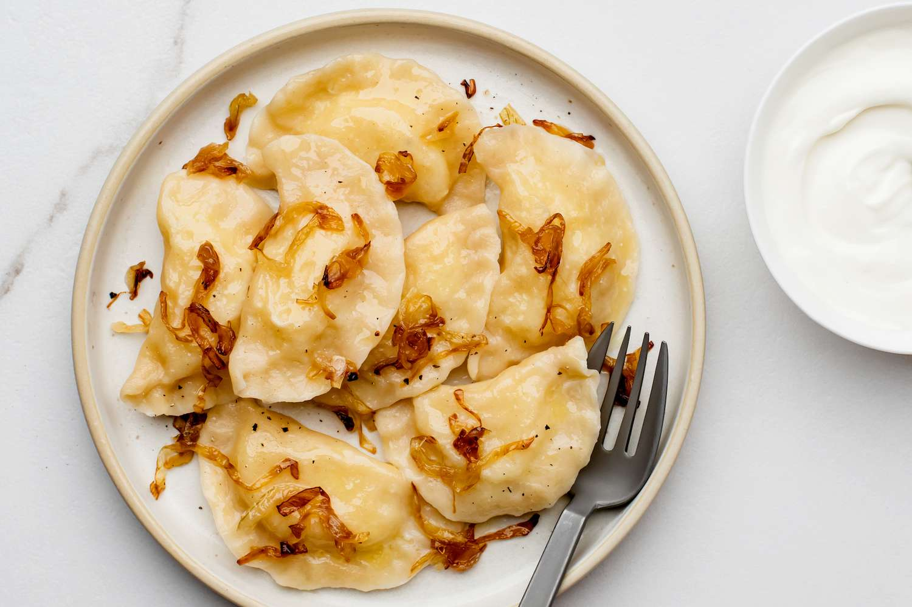

PIEROGI

INGREDIENTS
- 2 cups all-purpose flour
- 1/2 tsp salt
- 1 large egg
- 1/2 cup lukewarm water
- 1 tbsp vegetable oil
- 1 lb potatoes, peeled and diced
- 1 large onion, chopped
- 4 tbsp unsalted butter
- 1/2 cup sour cream
- Salt and pepper to taste
INSTRUCTIONS
- In a large mixing bowl, combine the flour and salt.
- In a separate bowl, whisk together the egg, water, and vegetable oil.
- Add the wet ingredients to the dry ingredients and mix until a dough forms.
- Knead the dough on a floured surface for 5-7 minutes or until smooth and elastic.
- Cover the dough and let it rest for 30 minutes.
- In a large pot, boil the potatoes until soft. Drain and mash them.
- In a separate pan, sauté the onion in butter until soft and lightly browned.
- Add the mashed potatoes to the pan and mix well with the onions.
- Stir in the sour cream and season with salt and pepper to taste.
- Roll out the dough on a floured surface until it is 1/8 inch thick.
- Use a round cookie cutter or a glass to cut out circles of dough.
- Place a spoonful of the potato filling in the center of each circle.
- Fold the dough over the filling to create a half-moon shape.
- Press the edges of the dough together to seal the pierogi.
- Boil the pierogi in a large pot of salted water for 3-4 minutes or until they float to the surface.
- Remove the pierogi with a slotted spoon and place them on a plate.
- Serve hot with additional sour cream or sautéed onions on top.